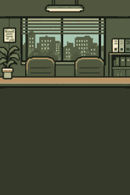

게스티메이션
guess(짐작) + estimation(추정)
직접 계산하기 어려운 문제도
주어진 질문을 분석하고 가정을 세워
답을 '합리적으로' 추정하는 방법이에요
예를 들어
"한국에 치킨집은 몇 개?"라는 질문에
인구 → 치킨 먹는 횟수 → 가게당 판매량
이렇게 쪼개서 계산하면
그럴듯한 숫자가 나와요
마케터, 컨설턴트 등 직무 면접 단골 문제,
GUESSTY에서 회사를 돌며
직접 연습해봐요
게스티메이션 면접 도장깨기 게임
guess(짐작) + estimation(추정)
직접 계산하기 어려운 문제도
주어진 질문을 분석하고 가정을 세워
답을 '합리적으로' 추정하는 방법이에요
예를 들어
"한국에 치킨집은 몇 개?"라는 질문에
인구 → 치킨 먹는 횟수 → 가게당 판매량
이렇게 쪼개서 계산하면
그럴듯한 숫자가 나와요
마케터, 컨설턴트 등 직무 면접 단골 문제,
GUESSTY에서 회사를 돌며
직접 연습해봐요
면접이 잠시 미뤄졌어요
Live Server로 열었는지 확인
